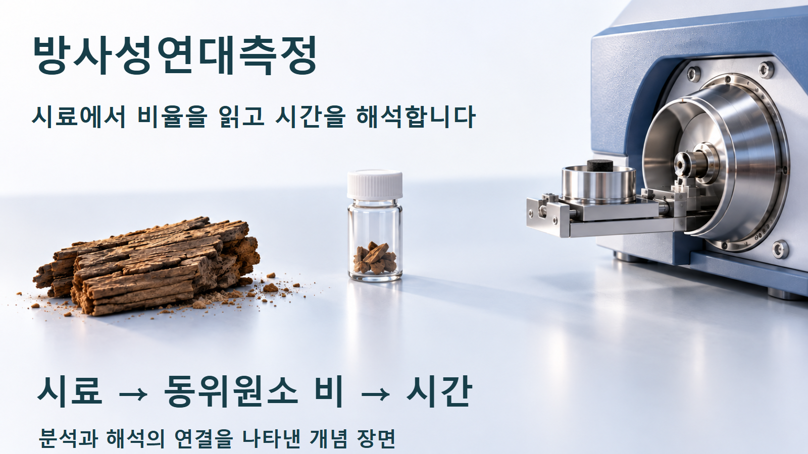
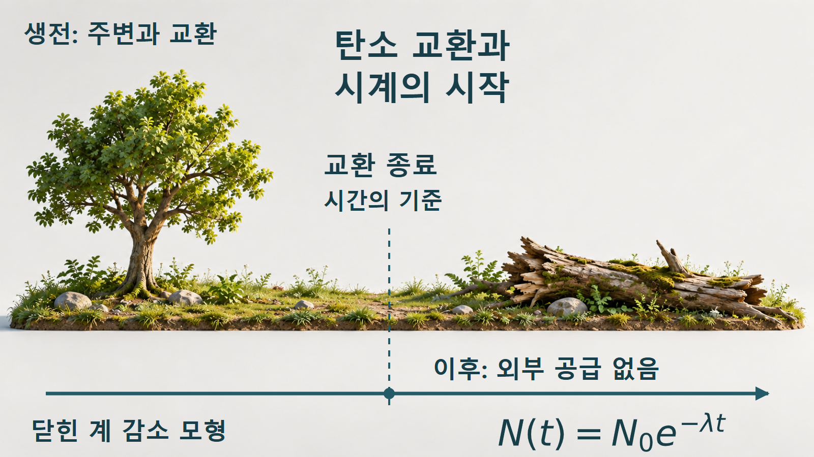
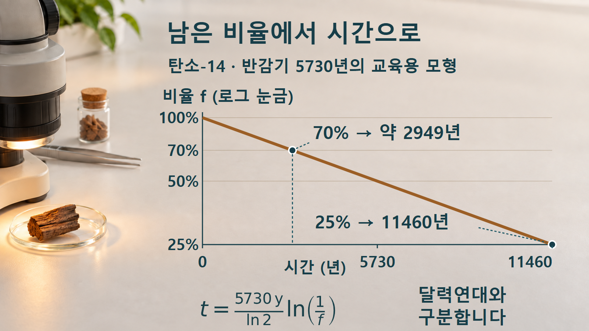
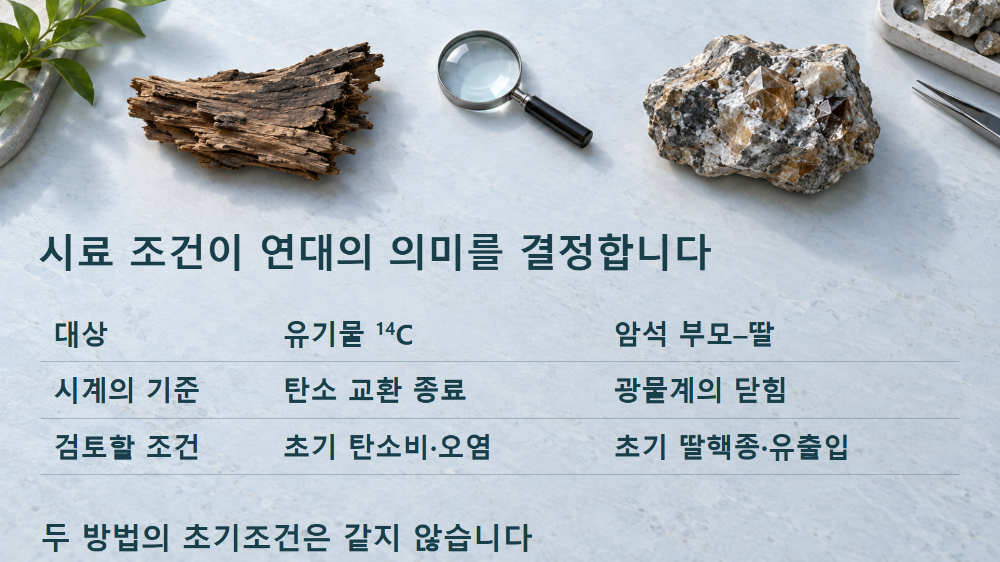

방사성붕괴와 시간 · 057
방사성연대측정
남은 비율을 시간으로 바꿀 때 필요한 초기조건
탄소-14가 25% 남았다면 두 반감기라는 계산은 쉽습니다. 하지만 그 숫자를 유물의 달력연대로 읽으려면 시료가 언제 탄소 교환을 멈췄는지, 초기 기준과 보정은 무엇인지까지 확인해야 합니다.

시료가 기록하는 시간
방사성연대측정은 현재 남아 있는 방사성 핵종의 비율이나 부모·딸핵종의 관계를 이용해, 어떤 사건 이후 흐른 시간을 추정하는 방법입니다. 붕괴 법칙 자체는 일정하지만 시계가 시작되는 사건은 시료마다 다릅니다. 살아 있는 생물의 탄소 교환이 끝나는 사건과 암석의 광물계가 닫히는 사건을 같은 뜻으로 다루지 않습니다. [1]
탄소-14를 예로 들면, 생물은 살아 있는 동안 주변 환경과 탄소를 교환합니다. 교환이 끝난 뒤 외부 탄소의 추가 유입이 없는 이상적인 계에서는 탄소-14의 감소를 시간과 연결할 수 있습니다. 나무 시료가 눈에 보이는 만큼 줄었는지를 재는 것이 아니라, 탄소 동위원소의 비율에 담긴 정보를 해석합니다. [1] [2]
따라서 먼저 묻는 것은 “몇 년 전인가”보다 “이 시료가 어떤 사건을 기록하는가”입니다. 시료에 맞는 방법과 초기조건이 정해져야 측정한 비율을 의미 있는 시간으로 바꿀 수 있습니다. 모든 오래된 물질을 탄소-14 한 가지로 측정하는 것은 아닙니다.
비율을 시간으로 바꾸는 식
초기 탄소-14의 양을 N₀, 경과 시간 t에서 남은 양을 N(t)라고 하면, 닫힌 계의 단순 모형은 N(t)=N₀e−λt입니다. λ는 붕괴상수이며 반감기 T와 λ=ln2/T의 관계를 갖습니다. 실제 측정에서는 동위원소 비율을 초기 기준과 비교하며, 여기서는 그 상대적인 잔존량을 f=N(t)/N₀로 표현합니다.
외부와의 탄소 교환이 끝났다고 가정하면, 그 뒤의 탄소-14는 붕괴에 따라 줄어듭니다.

시간을 구하려면 비율의 자연로그를 취합니다. 감소율을 나타내는 지수식이, 남은 비율로 경과 시간을 역산하는 로그식으로 바뀝니다. f는 단위가 없고 λ가 년−1이면 계산된 t의 단위는 년입니다.
예컨대 f=0.25는 나무의 전체 질량이 원래의 25%라는 뜻이 아닙니다. 이 모형에서 비교하는 탄소-14의 상대량이 초기 기준의 25%라는 뜻입니다. 초기 기준을 잘못 잡으면 로그 계산이 정확해도 시간 해석은 달라집니다.
25%와 70%의 역산
다음 두 예시는 반감기 5730년을 사용하는 교육용 단일 감소 모형입니다. 이 반감기에서 λ=ln2/5730≈0.000120968 년−1입니다. 외부와의 교환이 끝난 뒤 초기 기준이 알려져 있고 오염이나 추가 탄소 교환이 없다고 가정합니다. 탄소-14의 물리적 반감기는 약 5730년으로 설명됩니다. [1] [2]
예시 1 — 초기 기준의 25%가 남았습니다. t=(5730/ln2)×ln(1/0.25)=11460년입니다. 100%에서 50%, 다시 25%로 두 번 반감하므로 두 반감기라는 직관과도 일치합니다. 이 값은 정해 둔 모형에서 교환 종료 후 흐른 시간이며, 특정 유물의 보정 달력연대 판정은 아닙니다.
예시 2 — 초기 기준의 70%가 남았습니다. t=(5730/ln2)×ln(1/0.70)≈2948.50년, 즉 약 2949년입니다. 반감기 한 번이 지나기 전이므로 5730년보다 짧습니다. “30%가 없어졌으니 반감기의 30%”라고 선형 비례시키면 같은 결과가 나오지 않습니다.
70%처럼 반감기의 정수배가 아닌 비율도 같은 로그식으로 계산할 수 있습니다.

그림은 세로축의 비율에 로그 눈금을 사용합니다. 그래서 지수감소가 직선으로 보이며, 100%→50%와 50%→25%가 같은 수직 간격을 갖습니다. 70% 눈금의 위치는 그 사이 비율을 로그로 변환한 결과입니다. 눈금이 같아 보이는 길이를 단순한 퍼센트 차이로 읽지 않습니다.
측정연대와 달력연대의 구분
위에서 구한 11460년과 약 2949년을 현재 연도에서 그대로 빼서 유물의 달력연대를 정하면 안 됩니다. 실제 대기의 탄소-14 비율은 과거 내내 일정하지 않았으며, 관례적 방사성탄소연대의 보고에는 5568년 반감기를 사용하는 관습도 있습니다. 따라서 이 글의 5730년 교육 모형과 실험실의 관례적 보고연대는 구분해야 합니다. [2]
실제 해석에서는 시료와 측정 결과에 적합한 보정 정보를 적용해 달력연대와의 관계를 평가합니다. 보정은 지수식의 숫자만 더 정밀하게 계산하는 작업이 아닙니다. 과거의 초기 탄소 비율이 달랐다는 정보를 함께 반영하는 과정입니다. 이 글의 직선 그래프는 보정곡선이 아닙니다. [2]
암석을 다루는 부모-딸 방식에서는 붕괴로 새로 생긴 딸핵종과 처음부터 존재하던 딸 성분을 구분하는 문제가 중요합니다. 시료의 대상과 기록하는 사건이 다르므로 유기물의 탄소연대측정에 쓰는 초기조건을 그대로 가져오지 않습니다. [1]
유기물의 탄소연대측정과 암석의 부모-딸 연대측정은 시계가 시작되는 조건부터 다릅니다.

비율보다 먼저 확인할 조건
외부 탄소가 섞이면 그 탄소가 가진 동위원소 비율도 측정 결과에 포함됩니다. 예를 들어 초기 기준에 가까운 현대 탄소가 오래된 시료에 섞여 f를 키우면, 위 로그식에서는 계산되는 시간이 짧아집니다. 반대로 어떤 오염이든 같은 방향으로 영향을 준다고 단정하지 않고 섞인 성분의 비율을 살펴야 합니다.
광물계에서 부모나 딸핵종이 이동해도 닫힌 계 계산의 전제가 달라집니다. 큰 측정 장비가 자동으로 초기조건의 문제까지 해결해 주는 것은 아닙니다. 시료가 남아 있는 장소, 기록하려는 사건, 이후의 변화 이력을 측정값과 함께 검토해야 합니다.
측정값의 불확실성과 보정에 따른 범위도 단일 숫자 뒤에 숨기지 않습니다. 이 글의 두 계산은 정확한 f를 입력한 수학적 예제입니다. 실제 시료의 측정 오차, 배경 신호, 보정 결과를 평가한 실험 보고서로 대신 사용할 수 없습니다.
계산과 해석의 단계
| 단계 | 확인할 질문 | 잘못된 해석 |
|---|---|---|
| 시료 선택 | 어떤 사건을 기록합니까? | 모든 오래된 물질에 같은 방법 적용 |
| 비율 측정 | 현재비와 초기 기준은 무엇입니까? | 남은 비율을 시료 질량 비율로 해석 |
| 모형 역산 | 반감기·닫힌 계 조건이 맞습니까? | 손실 비율에 시간을 선형 비례 |
| 연대 해석 | 보고 관례와 보정은 무엇입니까? | 모형시간을 달력연대로 즉시 변환 |
방사성연대측정의 계산은 비율 하나를 시간 하나로 바꾸는 식에서 출발합니다. 그러나 결과의 의미는 시료가 기록하는 사건과 초기조건, 이후의 유출입, 보정 정보에 달려 있습니다. 무엇을 측정했고 어떤 가정을 적용했는지를 함께 읽어야 연대라는 숫자를 올바르게 이해할 수 있습니다.